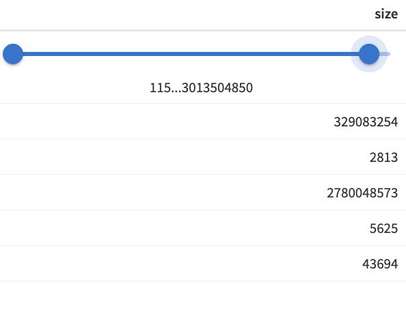
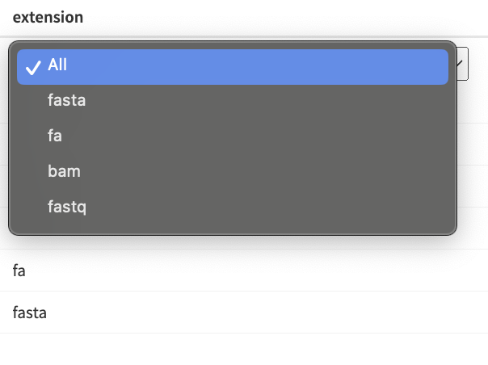
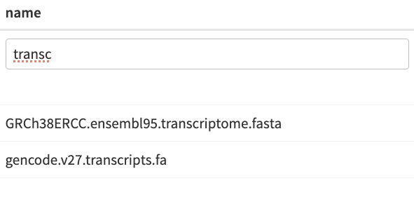

File Picker Module: Integration and Examples
2024-09-17
file-pickers.RmdModule Overview
The File Picker Module is designed to facilitate the selection of Platform project files . It displays a table of available files, allowing users to choose files based on different criteria. It supports both single and multiple file selections and integrates seamlessly with the server-side logic of your Shiny app. By leveraging this module, you can streamline file management tasks, enhance user experience, and ensure that file selection is handled consistently across various parts of the application.
UI Function
The module UI function creates an action button that triggers a modal dialog for file selection.
The UI function also allows you to customize the action button icon
(button_icon parameter) and width
(button_width parameter) to suit the needs of your
application.
UI Function Call
mod_file_picker_ui("file_picker_1")Server Function
The server function handles the logic for displaying the file picker modal and managing file selection. It provides features such as table filtering, pagination, and selection modes. The most crucial argument for this function is files_df, which is a data frame that developers must prepare and provide. This data frame should include columns for file paths and other relevant metadata.
Parameters:
id: A unique identifier for the module instance.
files_df: A data frame containing the file information. This is the most important argument, and it must include columns for the file paths and any other relevant metadata.
selection: Specifies the selection mode (‘single’ or ‘multiple’). Defaults to ‘single’.
file_identifier_column: The column in files_df used to identify selected files. Defaults to path.
default_page_size: The number of rows per page in the file table. Defaults to 10.
use_bslib_theme: Choose if the bslib theme is used for the modal UI. Defaults to FALSE.
Tip: You can use the utility function
get_all_project_files() to fetch all project files along
with their metadata from the Seven Bridges File System (SBFS) that is
expected to exist on the instance where the app will be hosted. This
function returns a data frame containing comprehensive file information,
making it an ideal input for the mod_file_picker_server() function.
Check vignette("load-files-and-metadata") for more details
about the get_all_project_files() function.
Note: If your Shiny app utilizes the bslib theme,
ensure that use_bslib_theme is set to TRUE to
maintain consistent styling across the modal dialog.
Server Function Call
mod_file_picker_server("file_picker_1", files_df, selection = "single")Or
mod_file_picker_server("file_picker_1", files_df, selection = "multiple")File Picker Modal Dialog
When using the File Picker Module, you need to specify which information should be returned for the selected row(s). This is done through the file_identifier_column parameter. By default, file_identifier_column is set to path, as this is typically the most useful information for subsequent steps in the application. However, you can set this parameter to any other column in the files_df data frame that contains the desired information.
It is crucial that the specified column, whether path or another value, exists in the files_df data frame provided to the module. The module will return a reactive expression containing the information from the specified file_identifier_column for the selected file(s).
When the modal dialog for file selection opens, the module displays a preview table of files and allows users to select files based on the specified selection mode (‘single’ or ‘multiple’). Depending on the selection mode, the table will show either radio buttons (for single file selection) or checkboxes (for multiple file selections), enabling users to choose one or more files. Below, you will find examples illustrating both single-file and multi-file picker interfaces.

Table options
Table columns are equipped with various filter options depending on the type of data:
-
Numeric Columns: A range slider filter allows users
to narrow down the table by selecting a range of numeric values.
Numeric column range slider
-
Factor Columns: A drop-down filter enables users to
filter the table by selecting specific factor levels.
Drop-down filter
-
Other Data Types: A basic filter with
case-insensitive text matching is available for other data types.
Case-insensitive text matching filter
Example: File Picker Module in Action
The following Shiny app demonstrates the usage of the File Picker module. The example includes two versions of the file picker:
- Single File Picker: Allows users to select only one file, utilizing radio buttons for file selection.
- Multiple File Picker: Enables users to select multiple files using checkboxes.
The app utilizes a built-in data frame from the
sbShinyModules package to populate the
files_df parameter of the file picker module.
Note: To run this example on your computer, please ensure you have the sbShinyModules package installed.
library(shiny)
library(sbShinyModules)
# library(bslib) # uncomment if you want to use a Bootstrap theme
# App's UI
ui <- fluidPage(
titlePanel("File Picker Module Examples"),
# theme = bslib::bs_theme(), # uncomment if you want to use a Bootstrap theme
sidebarLayout(
sidebarPanel(
# Single File Picker - UI
fluidRow(
h3("Single File Picker"),
br(),
sbShinyModules::mod_file_picker_ui("single_file_picker"),
br(),
h5("Selected File"),
verbatimTextOutput("single_file_picker_selection", placeholder = TRUE)
),
hr(),
# Multiple Files Picker - UI
fluidRow(
h3("Multiple Files Picker"),
br(),
sbShinyModules::mod_file_picker_ui("multiple_files_picker"),
br(),
h5("Selected Files"),
verbatimTextOutput("mult_files_picker_selection", placeholder = TRUE)
)
),
mainPanel(
# Placeholder
)
)
)
# App's Server Logic
server <- function(input, output, session) {
# ----------------------------- Load Files ----------------------------------
# Load a built-in data frame for files
files_df <- sbShinyModules::file_picker_example_data
# Remove units (bytes) from size column and make it numeric so that it has
# a range filter
files_df$size <- as.numeric(gsub(" bytes", "", files_df$size))
# Alternatively, fetch files from a provided directory (path) using the
# get_all_project_files() utility function. Note that this requires the
# xattrs package, which is not available for Windows systems. Therefore,
# this approach will only work on Unix-based systems.
# files_df <- sbShinyModules::get_all_project_files(
# path = "/sbgenomics/project-files"
# )
# ---------------------------------------------------------------------------
## -------------------- Single File Picker - Server Code --------------------
# Call the file picker module
selected_files_single_picker <- sbShinyModules::mod_file_picker_server(
id = "single_file_picker",
files_df = files_df,
# use_bslib_theme = TRUE, # uncomment if you want to use a Bootstrap theme
selection = "single",
default_page_size = 5
)
# Display selected files
output$single_file_picker_selection <- renderPrint({
validate(
need(
selected_files_single_picker(),
"No file has been selected."
)
)
cat(selected_files_single_picker(), sep = "\n")
})
# ---------------------------------------------------------------------------
## ----------------- Multiple Files Picker - Server Code --------------------
# Call the file picker module
selected_files_mult_picker <- sbShinyModules::mod_file_picker_server(
id = "multiple_files_picker",
files_df = files_df,
# use_bslib_theme = TRUE, # uncomment if you want to use a Bootstrap theme
selection = "multiple",
default_page_size = 5
)
# Display selected files
output$mult_files_picker_selection <- renderPrint({
validate(
need(
selected_files_mult_picker(),
"No files have been selected."
)
)
cat(selected_files_mult_picker(), sep = "\n")
})
# ---------------------------------------------------------------------------
}
# Note: To use a Bootstrap theme, ensure you have the 'bslib' package
# installed and loaded in your app.
# 1. Uncomment `library(bslib)` at the beginning of the script.
# 2. Uncomment the `theme = bslib::bs_theme()` line in the UI section.
# 3. In the server logic, set `use_bslib_theme = TRUE` in the
# `mod_file_picker_server()` function calls.
# Run the Shiny app
shinyApp(ui, server)